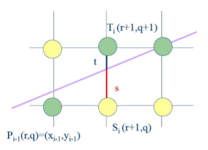
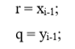
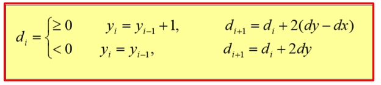

J.Bresenham je 1965. godine analizirao problem generisanja prave linije na digitalnom ploteru.
Tako je razvio algoritam koji se koristi čak i danas.
Njegova tehnika se zasniva na odlučivanju da li, u slučaju kada inkrementiramo vrednost koordinate X, treba inkrementirati vrednost koordinate Y ili ne.
Bresenham algoritam može se interpretirati kao malo modifikovani digitalni diferencijalni analizator
(koristeći 0,5 kao prag greške umesto 0, što je potrebno za rasterizaciju poligona koji se ne preklapaju).
Posmatrajmo sledeću sliku:

Kao što je poznato, jednačina prave glasi:
y = m*x + b,
gde je m koeficijent pravca, a b predstavlja pomeraj prave u odnosu na x-osu tj.koordinatni početak.
Ukoliko pravu transliramo u koordinatni početak, tada naše b = 0, pa je jednačina prave oblika
(1) y = m*x.
Takođe, važi da je:
(2) m = dy/dx
Smenom (2) u jednačini (1) dobijamo sledeće:
(3) y = (dy/dx)*x.
Ukoliko se vratimo na prethodnu sliku:
(4) s = (dy/dx)*(r+1) – q
(5) t = q + 1 – dy/dx*(r+1)
(6) := (4) – (5)
(6) s – t = 2*dy/dx*(r+1) – 2*q – 1
(7) := (6) * dx
(kako bi se dx izgubilo iz imenioca)
(7) dx*(s-t) = 2*dy*(r+1) – 2*q - 1
(8) di = 2*(r*dy – q*dx) + 2*dy – dx
(9) Uvodimo smenu:
(10) di = 2*( xi-1*dy – yi-1*dx) + 2*dy – dx
(11) di+1 = 2*( xi*dy – yi*dx) + 2*dy – dx
(12) di+1 - di = 2*dx*( xi - xi-1) - 2*dy*( yi - yi-1)
(13) S obzirom da vršmo inkrementiranje po x-osi imamo da je ( xi - xi-1) = 1
=> di+1 - di = 2*dx - 2*dy*( yi - yi-1).
U polju ispod je dat pseudokod za rasterizaciju prave korišćenjem Bresenham-ovog algoritma.
1.dx = abs(x1 –x0); 2.dy = abs(y1 –y0); 3.d = 2*dy -dx; 4.incr1 = 2*dy; 5.incr2 = 2*(dy-dx); 6.if (x0 > x1) 7.x = x1; 8.y = y1; 9.xend = x0; 10.else 11.x = x0; 12.y = y0; 13.xend = x1; 14.endif 15.WritePixel(pDC, x, y, value); 16.while (x < xend) 17.x = x + 1; 18.if (d < 0) 19.d += incr1; 20.else 21.y = y + 1; 22.d += incr2; 23.endif 24.WritePixel(pDC, x, y, value); 25.end while
Kao što možemo videti, kompletna računica se svodi na celobrojnu aritmetiku. Koriste se samo sabiranje, oduzimanje i množenje sa 2, što čini ovaj algoritam najbržim do sada